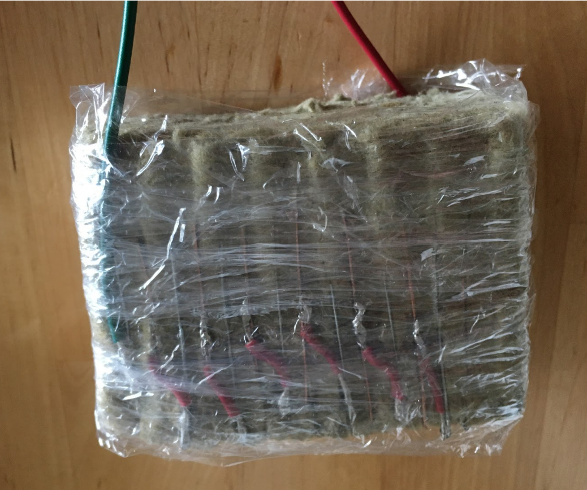
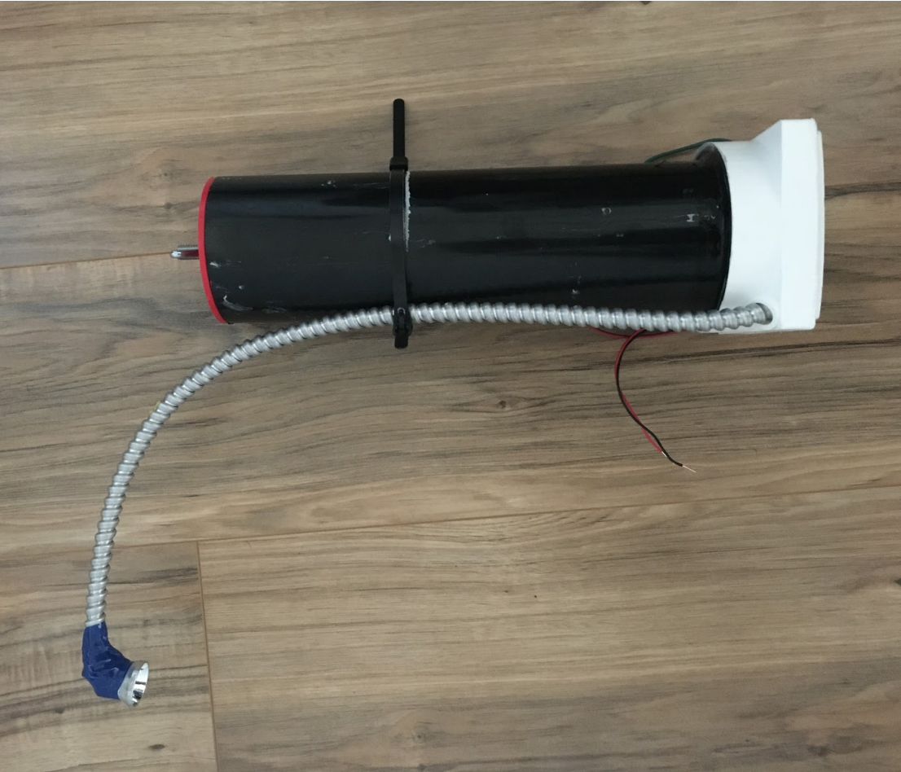
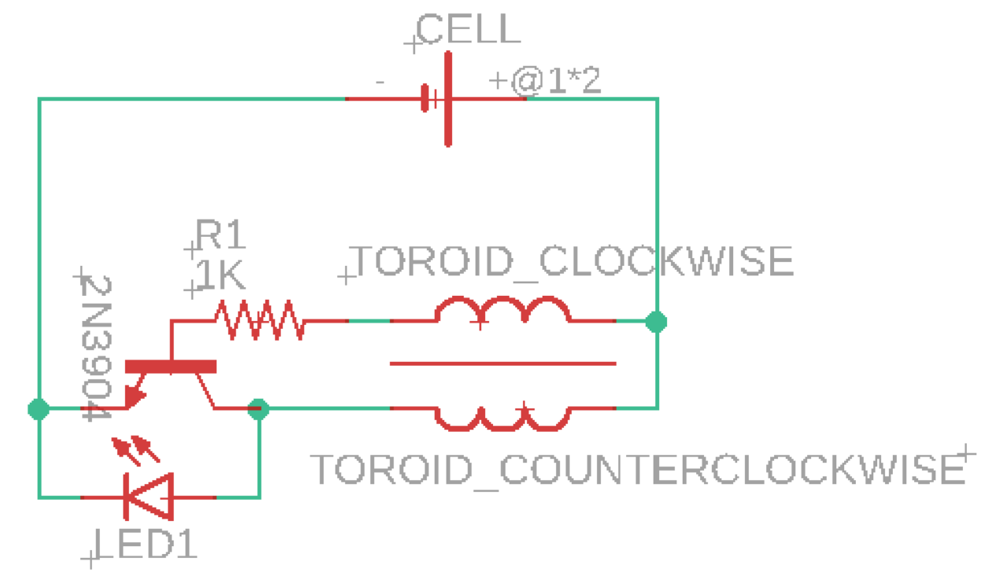

One of today's causes of pollution is the improper disposal of batteries containing heavy metals such as lead and mercury. A substitute for batteries can simply be water. Thus, the purpose of this project was to design, prototype, and test a personal, portable light source for off-grid use without containing commercial batteries. To accomplish this, the idea was to develop a galvanic cell system. The light would be powered by an electrolyte solution such as saltwater, converting the stored chemical energy into an electrical potential.
From rigorous experimentation and testing, it was determined that a copper cathode and zinc anode each with an approximate surface area of 38 cm2, contained within a porous material, and submerged in a saltwater solution, would act as an effective battery cell. For the porous boundary, a material that could be easily rinsed to remove any residuals and was relatively inexpensive was sought. Rockwool is generally used for insulating walls and sometimes in hydroponic systems, and it met the needs and wants for the cell design. Sizing and orienting the Copper and Zinc plates was determined by moving between Cell design and physical design. A balance between dimensions of available materials for the PVC body and Rockwool combined with a desirable form factor led to the finalized cell design composed of 7 copper and 7 zinc alternating parallel 3.6 cm by 4.6 cm rectangles inserted into a Rockwool rectangular cube with equal spacings of 0.3 cm. The like plates, either copper or zinc, were all connected to one another by a conductive and shielded wire, effectively creating a single plate of sufficient surface area to produce the required power. To increase the power output, three cells wired in series were fit into the PVC body.
 The flashlight was designed to minimize form factor, reduce the possibility of user error, and maintain operational simplicity. The body and cell housing consisted of a 3-inch diameter PVC pipe cut to size. The Circuit housing end cap and circuit housing enclosure were both designed to be multi-functional components and are proprietary designs. The Circuit housing end cap served a permanently sealed end, attached with watertight caulking, to the PVC body and cell housing to contain the saltwater solution and battery cells. A port allowed for the passage and installation of wiring to carry electric current from the cells to the primary circuit, once the wiring is passed through the port was sealed with watertight caulking as well. The circuit housing end cap also acted as the mounting point for the primary circuit PCB, the push-button on-off switch, and the goose-neck flexible arm. The square form ensured that the assembly does not roll.
To to be able to supply the flashlight LED with enough voltage to allow it to light up, it needed to boost the voltage that was released from the galvanic cell, as the initial voltage was too weak to do so. To accomplish this, the Joule Thief circuit was utilized. The Joule Thief Circuit is a voltage booster circuit which converts a constant low voltage input into a periodic output of a higher voltage. The peaks in the output voltage occur rapidly, causing the LED to flash at a very fast rate. However, the LED appears to be constantly lit to the human eye due to the persistence effect. The circuit is an arrangement of a power source, a resistor, a transistor and a ferrite toroid core wrapped with two wires coming from the positive terminal of the power source, one through a resistor. A magnetic field is created around the ferrite toroid due to the current that passes through the wires. The extra current causes the transistor to switch off. As a result, the magnetic field is converted into electrical energy which is given as output. Once the magnetic field seizes, the transistor is switched back on and conducts electricity to create the magnetic field again. This process occurs rapidly enough to provide a somewhat constant power output. The frequency of voltage spikes that was generated by the assembled circuit was over 5KHz.
